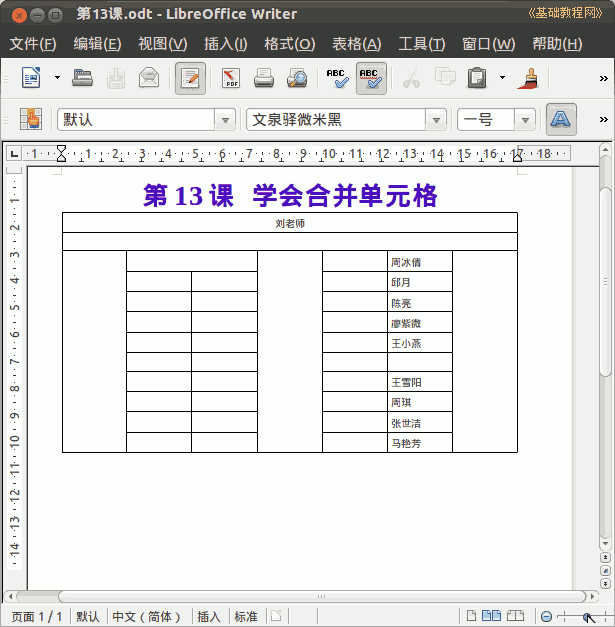

2011-2012 第二学期七年级文字处理和网页教学设计
作者：TeliuTe 来源：基础教程网
十三、学会合并单元格 返回目录 下一课
（一）教学设计
1、学习目标：学会表格实际应用
2、注意事项：按照机房布局作一个座位表，把自己组的成员写上
3、教学过程：
1）教师准备学案和板书；
2）学生整队进入，开机抄黑板上笔记；
3）教师讲解板书演示操作；
4）学生打指法、日志、完成操作；
5）教师打勾记录学生指法成绩，检查日志和操作；
注：学生抄完笔记就开始打指法、日志，老师讲完后再继续完成；
（二）板书设计(学生笔记)
第13课 学会合并单元格
1、制作一个座位表
2、数出横着__行，竖着__列
3、过道选中，点右键、单元格、合并
4、讲台、过道一个9台，另一个10台
5、保存为第13课
操作图示：

（三）课后记 2012-3-31 18:48
今天明天都上课，先上周二的课
明天周一不知是怎么想的，上就是了
--
说是最后一节大扫除，数学老师要占课
问年级组长要不都调掉算了，几个上几个不上的没法弄
--
最后说是调别的课，等会看看怎么样
结果还是上了，这个班的学生底子差的多
--
机子控制以后，先讲一下黑板上的，
这节课要把机房的座位表画出来，输入自己组的学生姓名
--
看着简单，做起来容易绕不过弯
有一排机子少两个，这样合并的时候要多合并 一个
--
先把行列定出来，直接讲解引导一下能听懂
学生对听课不怎么用心，等着老师操作又记不了那么多
--
让互相帮忙，这样老师也不会生气，学生也可以慢慢做
要都让老师讲的话又冒火了，只是学生要喜欢相互帮忙
--
学生带mp3小卡来听歌，晳进还没发现 什么问题
后面根据情况再要求，一般是鼓励学生多操作
--
把几个眼睛近视，动作慢的调到前面老师能看到的地方
早该调一下座位了，固定座位也不是死的
--
有一个班没上，去大扫除了，估计是不能补了
就一个班没法等，非得占正课去弄这些也没话说
--
老师的讲台加上增加了复杂性，
其实只要机子和过道就好理解些
--
绕弯还是有困难，可能没有习惯在信技课上动脑
慢慢训练好了，保持连续性
--
返回目录 下一课
本教程由86团学校TeliuTe制作|著作权所有
基础教程网：http://teliute.org/
美丽的校园……
转载和引用本站内容，请保留作者和本站链接。